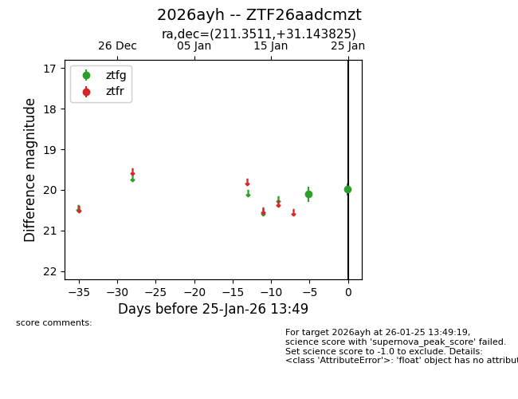
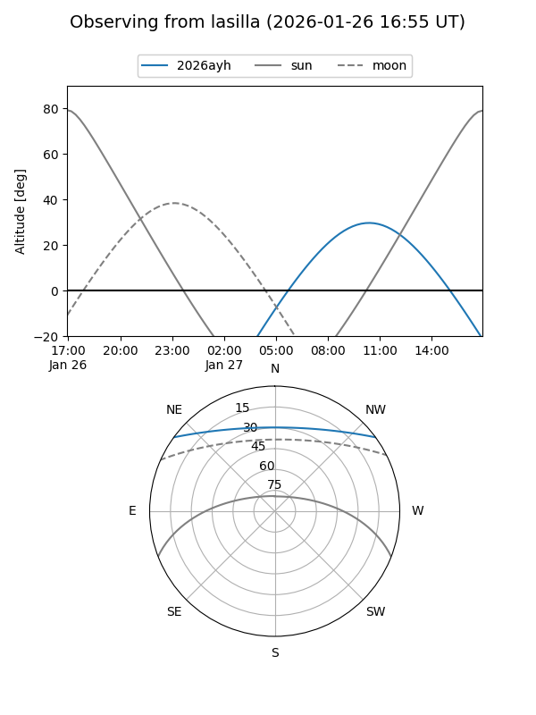
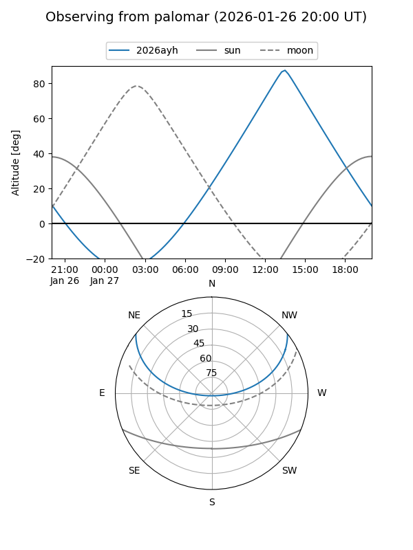

2026ayh
Target 2026ayh at 2026-01-25 13:51
Aliases and brokers:
FINK: link
Lasair: link
ALeRCE: link
TNS: link
YSE: link
alt names
ZTF26aadcmzt (ztf,fink_ztf)
2026ayh (tns,yse)
Coordinates:
equatorial (ra, dec) = 211.3511,+31.14383
equatorial (HMS+DMS) = 14:05:24.26,+31:08:37.77
galactic (l, b) = (51.3084,+73.37901)
Flags:
Photometry:
last ztfg=19.99
2 ztfg detections
Lightcurve

Visibility


Additional plots